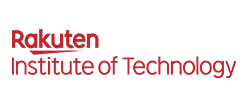
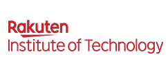

第26回インタラクティブシステムとソフトウェアに関するワークショップ
The 26th Workshop on Interactive Systems and Software (WISS 2018)
WISS 2018は終了しました。WISS 2019は2019年9月25日 (水)–27日 (金) にロイヤルホテル長野にて開催予定です。
- 主催
- 日本ソフトウェア科学会 インタラクティブシステムとソフトウェア研究会
- 日時
- 2018年9月26日（水） – 28日（金）
- 場所
- 八ヶ岳ロイヤルホテル（山梨県北杜市）
WISSは、2泊3日の泊り込み形式で、インタラクティブシステムにおける未来を切り拓くような新しいアイディア・技術を議論するワークショップです。この分野において国内でもっともアクティブな学術会議のひとつであり、例年160名以上の参加者が朝から深夜まで活発で意義深い情報交換をおこなっています。さまざまなバックグラウンドを持った方々からの積極的な論文投稿および参加をお待ちしております。
第26回となるWISS 2018は八ヶ岳ロイヤルホテル（山梨県北杜市）で開催します。
注意
今年は開催時期が2か月以上繰り上がっています。それに伴い、論文投稿や各種提案の期限も大幅に繰り上がっていますのでご注意ください。さらに開催地もWISS 2017のクロージングでの告知から変更になっていますのでご注意ください。
今年は論文のWEB掲載もWISS2018の開催1週間前に開始します。特許出願等との兼ね合いに十分ご注意ください。
スケジュール
| 日程 | 内容 |
|---|---|
| 2018年03月07日（水） | Webサイト公開 |
| 2018年06月01日（金） | 登壇発表論文投稿〆切（6/2 00:00 (JST) に投稿サイト閉鎖） |
| 2018年06月08日（金） | 表紙デザイン / ウェブデザイン募集〆切 |
| 2018年07月31日（火） | デモ・ポスター発表（論文のWEB掲載あり）投稿〆切（8/1 00:00 (JST) に投稿サイト閉鎖） |
| 2018年08月01日（水） | デモ・ポスター発表（論文のWEB掲載なし）応募開始（先着順） |
| 2018年09月19日（水） | 論文のWEB掲載開始 |
協賛学会（五十音順）
- 画像電子学会ビジュアルコンピューティング研究会
- 芸術科学会
- 計測自動制御学会システムインテグレーション部門
- 情報処理学会エンタテインメントコンピューティング研究会
- 情報処理学会音楽情報科学研究会
- 情報処理学会音声言語情報処理研究会
- 情報処理学会コンピュータグラフィックスとビジュアル情報学研究会
- 情報処理学会デジタルコンテンツクリエーション研究会
- 情報処理学会ヒューマンコンピュータインタラクション研究会
- 情報処理学会プログラミング研究会
- 情報処理学会ユビキタスコンピューティングシステム研究会
- 電子情報通信学会ヒューマンコミュニケーショングループ
- 日本バーチャルリアリティ学会
- ヒューマンインタフェース学会
企業スポンサー（会社名五十音順）：募集締め切りました
- グリー株式会社
- 株式会社Cygames（Cygames Research)
- 株式会社サイバーエージェント（AI Lab)
- チームラボ株式会社
- TIS株式会社
- 株式会社 電通国際情報サービス
- 株式会社バンダイナムコスタジオ
- フューチャー株式会社
- 三菱電機株式会社
- 楽天株式会社 楽天技術研究所
- 株式会社LIFULL
- ユニティ・テクノロジーズ・ジャパン合同会社


 
